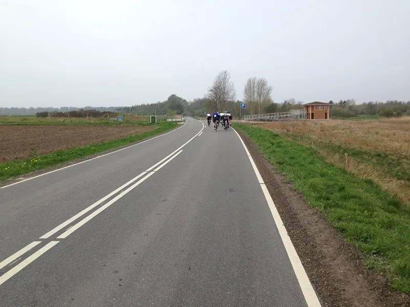

Nordfyn Rundt 2015: Topplaceringer til Squadra Molteni

Det blev til en 6. plads og en 9. plads til Squadra Molteni ved den fynske forårsklassiker Automester Nordfyn Rundt 2015.
Niels Bjørnsteen og Kasper Sørensen tog afsted til Bogense tidlig lørdag morgen for at vise de orange Molteni-farver.
Forude lå 72 km. i det smukke nordfynske landskab. Vejret var mildt, men en frisk vind havde godt fat.
Nordfyn Rundt 2015 triller ud af Bogense
Et godt 130 mads stort felt rullede ud af Bogense. Farten var meget rolig. Så efter godt 5 km lagde Niels Bjørnsteen sig frem i feltet og trådte an.
Det gav øjeblikkelig lidt spredninger – og kort efter var der dannet et førerfelt på 40-50 ryttere. Der var side- og modvind de første 25-30 km, så der var kamp om pladserne på vifterne.
Kasper og Niels lå konstant i forreste del af førerfeltet, der selv i modvinden lå med en fart pænt over 35 km/t.
Feltet knækker efter Båring Bakke
Efter små 30 km kom første alvorlige stigning, Båring bakke. Her blev der kørt godt. Kasper og Niels holdte sig godt til i spidsen.
Efter bakken var feltet knækket over. Kasper og Niels lå nu en førergruppe på kun 10-12 mand.
Efter små 50 km forsøgte en rytter at stikke fra førergruppen. Det lykkedes ham af få et hul på et par hundrede meter.
Efter lidt tøven i gruppen satte Kasper og Niels pres på – og begyndte at køre udbryderen ind.
Da Kasper og Niels havde taget 2-3 føringer hver lige efter hinanden, slog de ud. Men tilsyneladende var der ikke meget vilje i resten af førergruppen til at deltage i arbejdet.
Kaptajnen gav kul-fyrene en verbal røvfuld
Her måtte ”capitaine de la route” Niels Bjørnsteen slå i bordet, og fortælle, at det ikke kunne være rigtigt, at alle de carbon-raketterne ikke kun assistere to gamle stålcykler i jagten.
Det hjalp – udbryderen blev kørt ind og førergruppen var samlet igen.
Med små 7 km til mål begyndte de indledende manøvre på finalen. Det var samtidig 7 km. i modvind.
Der blev rykket lidt her og dér – dog uden af nogen fik hul.
Med 3 km til mål rykker Niels
Et hårdt ryk, men mest for at se de andre ryttere an. Desværre sad Kasper i rød zone på det tidspunkt – og måtte slippe.

Med 600 meter til mål rykkede en Kolding-rytter for alvor. Niels stak efter ham – og nåede op. Men med 200 meter til stregen kom en gruppe på 6 op.
På de sidste meter fik Niels presset sig ind på en 6. plads. Kasper rullede over stregen kort efter på en 9. plads.
Et super vellykket Automester Nordfyn Rundt
Bogense Cykelklub havde arrangeret et super godt cykelløb. Alt lige fra indskrivning med morgenmad, ruten, afmærkning og målområde var i top.
Og i særklasse var de BMW motorcykel-marchals, der på professionel vis kørte foran og skærmede modkørende trafik de første 50 km.
Automester Nordfyn Rundt 2015 – et motionscykelløb i topklasse.
Resultater fra Nordfyn Rundt 2015
- Plac. 6: Niels Bjørnsteen, 01:58:25 (Plac. 40-49 år: 2), Squadra Molteni, 36.2 km/h.
- Plac. 9: Kasper Sørensen, 01:59:02 (Plac. 20-29 år: 2), Squadra Molteni, 36.0 km/h.